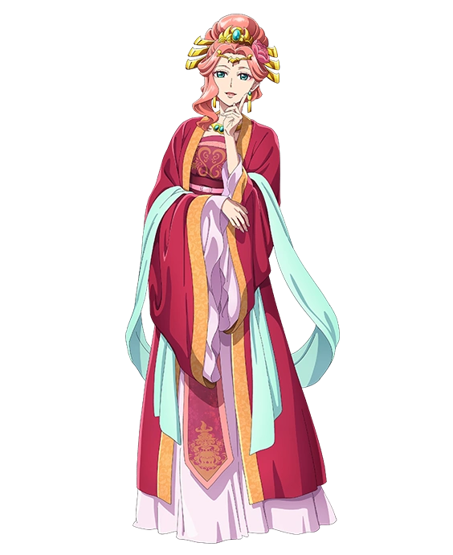

Gyokuyo
História:Gyokuyou tem uma personalidade digna de uma imperatriz sábia e benevolente. Com sua personalidade gentil e espirituosa, ela rapidamente se tornou a consorte favorita do Imperador. Ela é justa, atenciosa e muito protetora com suas damas de companhia e seus filhos.
